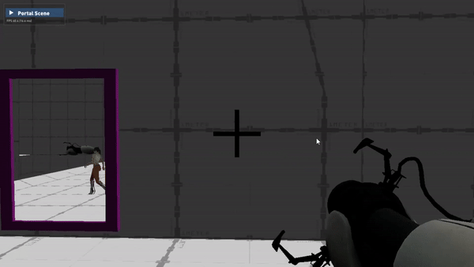
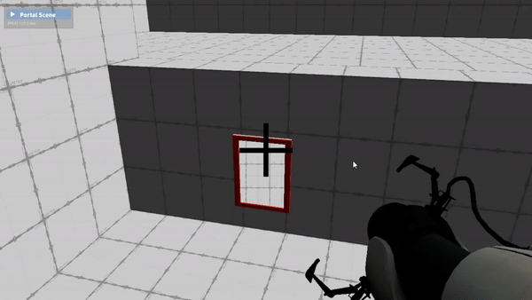

Lucy Lesire
AI & Gameplay Programmer

AI & Gameplay Programmer

Couch pvp shooter
Unreal Engine 4

The classic portal adventure c++

Real time changes in sketch based RTS formations

Time Travel Horror
Unreal Engine 5

Dismember zombies
Unity Prototype

Run to the beat
Unreal Engine 4
Prototype

Fly as a ghost
Unity Game Jam

A VR experience
Trains


During this project I have learned a lot about the Unreal Engine workflow, as this
was my first major project with c++ in Unreal Engine.
I have also learned how to work with a team and how to make a (local)
multiplayer game.
My role in the project was very broad due to the small team size. Half of the programming work was assigned to me, but I took a focus on gameplay logic.

First week: Moving & Shooting
Week 1: When starting our project, we chose to first create some base classes that functioned as blueprints for the rest of the game to come. I started to work on the healthcomponent and a simple gamemode, as my teammate took the movement and shooting on his plate.

Second week: Powerups
Week 2: Next came the programming of the powerups, as besides shooting they were a fundamental part of the game! In order for me to create the powerups, I needed to write the logic for energy, dashing and shields.
Third week: Tiles
Week 3: At this point in our game, we had gotten some of the art assets already, so we could change from a boring little box level to an actual pretty and funtional level. But this also meant that I needed to start working on the environmental effects of tile shaking and tile falling.

Fourth week: Death
Week 4: With tile sinking in place, it was time to make our player killable, it wouldn't be much of a shooting game without it. One of the ways for the characters to die is by falling off the map, and as the map gets increasingly smaller, it also gets increasingly easier to fall off.
Fifth week: Animations & HUD
Week 5: At the start of week 5, we were already quite deep into the project, and art came rolling in with it, including a new character and animations! It was my job to implement these and make sure that they blended nicely! On top of that we also added a HUD, so that the player can see their bullets, health, shield and energy!
Sixth week: Weapons!
Week 6: In this week, the production phase was coming to an end, so it was time for us to polish the gameloop and add much functionality for the game to be as fun as possible! I took care of adding 4 new weapons, the Corn Shotgun, Grape Minigun, the Coconut and the Lemon Bomb.
Week 7 & 8: Polish
Week 7 & 8: With the production phase out of the way it was time for the final step, polishing. In the next two weeks I mainly took care of a lot of bugs that popped up during production, but I also refactored the HUD to be more visible and less overwhelming in information. I also added tons of sounds and particles to existing weapons and powerups!


Unity Prototype
View through a portal
Portal Teleportation

Portal Shooting

Unity: Simple Portals
I started my project with a prototype in Unity. The first thing I did was creating a simple screen that had a camera linked to it. When the player moves, the portal-camera moves in the same way, except relative to it's portal rather than to the player. With this working I made sure that what the portal-camera saw was displayed onto a second screen that worked in the same way.
Unity: Mapped Portals
The next thing I had to was map the camera correctly to the screen, by using a shader. The shader took what the camera saw and cut out the parts outside of the portal, leaving the parts inside of the portal and creating the illusion of a portal.

Unity: Teleporting
The final thing I did in my prototype was implementing teleportation. To do so I teleported (moved) the player to the other portal once it's camera passed the initial portal's screen (by using the dot product between the camera and the portal). After I also made sure that the player was rotated along the forward of the second screen. That way they can succesfully walk out of the portal.
Overlord: Mapped Portals
With our prototype out of the way, it was time for me to translate all of it into the custom Overlord Engine. Since Overlord is not a Visual Engine, this was not an easy task. I started in the same way as my prototype and created two screens with cameras that move in the same way as the player, but relative to their portals.
Overlord: Shooting!
After the camera's were working, I started to work on shooting the portals. To do this I used a simple raycast and some rotation math to make sure the portal followed the normal of the surface it was one. I managed to make this work in no time.
Overlord: Teleporting
My dreaded enemy this project was the teleportation, implementing this into Overlord was quite tough, but with a bunch of math I managed to do it. First I check then if the player crossed the portal (via the dot product). Next I teleport (move) the traveller to the other portal. Finally I rotate the traveller so that it is facing outwards relative to the portal they just travelled to (the portal is behind them).

Draw Formations
Add Custom Templates

Make Real Time Changes

Make Real Time Changes
This research project presents real time changes in a custom formation system, to improve formations in existing real time
strategy games.
It allows the user to use simple drawings to create real time strategy game formations in
real time. At the same time, the project also allows for the user to remove units in existing formations, causing the
formation to reform the original formation, but with less units.
The project recognizes user input drawings by the use
of a gesture recognition algorithm, allowing the user to create formation templates and let them be recognized
later. The formations are also improved by the use of a grid, allowing for filling of formation and the removement
of minor unwanted flaws in the drawing.
It also always ensures that the scaling of the formation is as optimal
as possible to the number of units in the formation. In this project you will be able to see that the scaling will always
account for all units, with a marge of 2 units. The real-time changes in the project allow for direct implementation
in to existing real time strategy games, to enhance formation control.
I have made this project over the span of 3 months for my graduation work in my bachelor degree of Game Development.
More information can be found in my paper.

Environment

Interacting

Horror
We chose Unreal Engine 5 because of a few reasons, one of them is Lumen. Lumen allows us to create an amazing environment for a horror game. For me as an AI programmer it was also helpful to be able to use the Blackboard & Behavior tree that Unreal has built in.
During this project I have managed to refind my love for AI programming and it has started my career as an AI programmer. For this project, I implemented all the AI logic from the ground up.

Basic AI
The first thing for me to do was to implement the basic AI logic like spawning, moving, and seeing.
To implement this I used Unreal Engine 5s built in AI & Navmesh system.
I also made a simple behavior tree with the essential tasks in C++.

Movement
After implementing the monster's basic AI, I had to implement some of it's movement behaviors, this being: 'chasing, wandering and patrolling'.
When the monster sees the player, he will chase them.
When the monster loses sight of the player, he will start wandering in the direction the player was.
If the monster has no sight of the player, he will walk on set patrol points.
Monster Abilities
After the monster could move, it was time to implement his basic abilties, attacking and screaming.
When the monster comes close enough to the player he will stop moving and attack. After that it will do a small scream, allowing the player to escape.
When the monster is chasing the player and the player managed to hide in a locker, the monster will also do a scream at the locker.
Teleporting
The monster his most complex abilty is time travel. The monster would only time travel on 2 occasions, when he sees the player time travel or when his spectral form comes into contact with the player.
In order for the monster to time travel, there had to be 2 Navmeshes in the level, one in the past and one in the present. When the monster time travels, he swaps position with the spectral monster, causing him to also change navmesh.


Endless procedural waves

Tutorial

Loot
We had to work in the Unity Engine because the objective of this course was making us familiar with The Unity Engine and C#.
My goal was ofcourse to have a full prototype around my two keywords, Dismember and Exile. Dismember zombies to escape your exile.
During the game you can use your laser to shoot at the zombies, if a limb of a zombie loses all of its health, it will be dismembered. However, whilest using the laser you also have to pay attention to your battery, using the laser drain battery and when empty a refill is needed. As a last resort, the axe can also be used to dismember zombies from a melee range.

Hitting Beats

Missing beats

Slow Powerup
We had to work in the Unreal Engine because the objective of this course was making us familiar with The Unreal Engine and C++ in Unreal.
My goal was ofcourse to have a full prototype around my two keywords, Melody and Countdown.
Run on the beat until your time runs out.
During the game you you need to hit the beats (on the music), by pressing space when running over them.
In the meanwhile a countdown ticks down, when it hits 0, the game is over.
During the game you can gain time by hitting beats, and will lose time by missing beats and hitting obstacles.
The game also makes use of a beat generator that samples a song and pulls out the most prominent beats in 3 volumes high, middle and low.


Flying

Descending

Peaceful zone
We chose the Unity Engine because we only had 4 days and Unity allowed us to jump right into the action of creating our game.
The goal of the game is to survive as long as possible and getting a good score.
A good score can be obtained by flying far, taking powerups and boost rings.
However, score can be lowered for hitting mines, ufos and being hit with lightning
My role in the project was very broad, due to the small team size, ranging from AI programming and gameplay programming to tool programming.
My name is Lucy Marie Lesire, I am 22 years old and a Game Developer at AlterEyes.
At the young age of 4, I was introduced to gaming by my older brothers, who showed me
how to play "Tekken 2", 18 years later I am a passionate gamer.
In the Summer of 2018, I decided that I wanted to see the process of how games were
made and what I could do to make them myself.
The following year, in the summer of 2019, I decided to join Digital Arts & Entertainment
and I have been working on improving my skill at developing games ever since.
My favourite type of games are MOBA's and First Person Shooters. However during my
studies I have come to love Indie games and the beauty that they bring.
Other than Games, I also enjoy programming, I have been a programmer since high school,
where I studied Electronics. My main coding languages are C++ and C#. I use Unreal Engine
(4/5) and Unity.